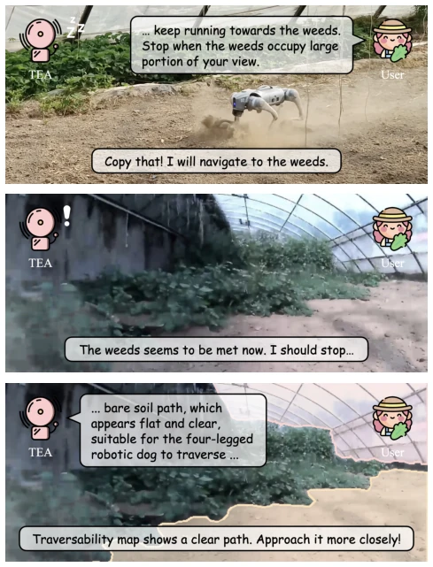
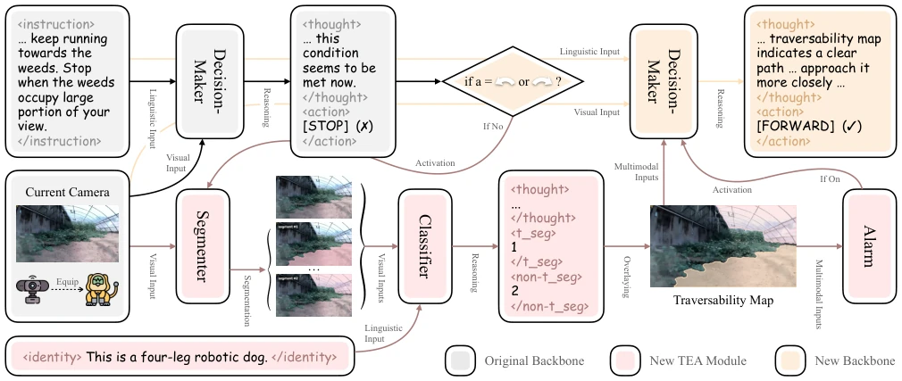
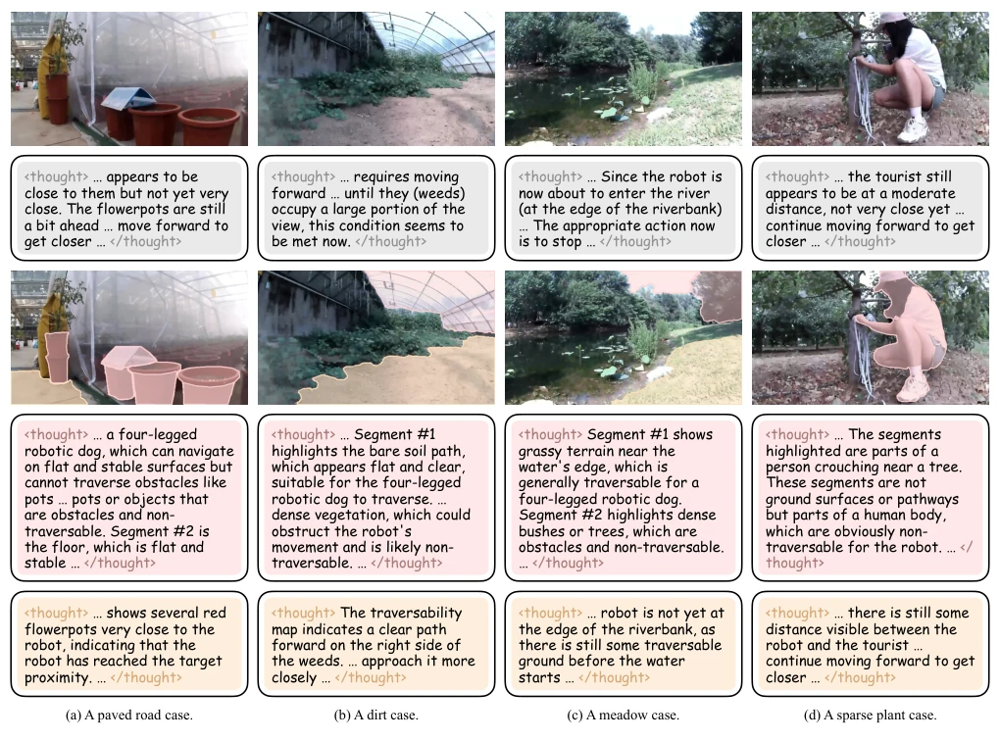

TEA-AgriVLN: Traversability Estimation Alarm for Agricultural Vision-and-Language Navigation
Xiaobei Zhao, Xingqi Lyu, Xin Chen, Xiang Li abspdf
论文点评Review
这篇论文给农业导航加了个“安全哨兵”。TEA 模块本质上是个基于 VLM 的 traversability 检查器，发现动作不对就报警让模型重想。虽然 SR 提升 7% 看着不错，但仔细一看，在稀疏植物这种混乱场景下直接崩盘，说明这“哨兵”自己也是个“睁眼瞎”。依赖 SAM 和 VLM API，推理成本估计不低，农业机器人真能扛得住吗？不过能把 AgriVLN 的 0.47 拉到 0.54，至少证明了在农业场景下，光靠语言指令不够，还得看脚下路平不平。这招有点像给自动驾驶加了个“防碰撞雷达”，但雷达本身在杂草丛里容易失灵，属于“治标不治本”的补丁，好在效果确实比盲跑强。
This paper adds a "safety sentinel" to agricultural navigation. The TEA module is essentially a VLM-based traversability checker that alerts and asks the model to rethink when actions are incorrect. Although the 7% SR improvement looks good, upon closer inspection, it collapses directly in chaotic scenes like sparse vegetation, indicating this "sentinel" is itself a "blind sentinel". Relying on SAM and VLM APIs, the inference cost is estimated to be not low, can agricultural robots really withstand it? However, pulling AgriVLN's 0.47 to 0.54 at least proves that in agricultural scenarios, relying solely on language instructions is not enough, one must also check if the road underfoot is flat. This move is like adding a "collision avoidance radar" to autonomous driving, but the radar itself is prone to failure in weeds, belonging to a "treating symptoms rather than the root cause" patch, fortunately the effect is indeed stronger than blind running.
研究动机Motivation
现有的 VLN-CE 大多在室内，地板墙壁界限分明。但农业场景太坑了，比如未成熟的玉米地，人过不去，机器狗可能能过。AgriVLN (Zhao, Lyu, and Li 2025) 虽然 pioneering 了农业 VLN，但 SR 只有 0.47，离人类 0.87 差距巨大。作者发现核心痛点是 traversability 的模糊性（ambiguous traversability）。传统 rule-based 泛化差，learning-based 依赖训练数据。农业场景语义复杂，需要一种能动态判断“这地儿能不能走”的机制，而不是盲目听指令。室内导航的 clear classification 在农业里失效，这是关键 gap。
Existing VLN-CE are mostly indoors, with clear boundaries between floors and walls. But agricultural scenes are too challenging, e.g., unripe cornfields, humans cannot pass, robot dogs might pass. AgriVLN (Zhao, Lyu, and Li 2025) although pioneered agricultural VLN, SR is only 0.47, huge gap from human 0.87. Authors found the core pain point is the ambiguity of traversability (ambiguous traversability). Traditional rule-based generalization is poor, learning-based relies on training data. Agricultural scene semantics are complex, needing a mechanism to dynamically judge "whether this area is traversable" rather than blindly following instructions. Indoor navigation's clear classification fails in agriculture, this is the key gap.

Figure 1: TEA-AgriVLN running on a simple example.
Overall is AgriVLN backbone plus TEA post-processing layer. TEA divides into three steps: 1. Segmentation: use SAM2.1 to cut images into blocks. 2. Classification: VLM zero-shot classification, input robot identity (e.g., quadruped dog), judge which blocks can walk. 3. Alarm: define front "alarm zone", if action is FORWARD but alarm zone has non-traversable area, or action is STOP but alarm zone has sufficient traversable area, trigger alarm. After trigger, feed Traversability Map back to decision maker to redo decision. This is a bidirectional alarm mechanism, both collision avoidance and stop avoidance. Specifically, by calculating traversable area ratio S+ and non-traversable area ratio S- within alarm zone, combined with preset thresholds τ+ and τ- to judge whether to alarm, logic is simple and direct but effective.

Figure 2: TEA-AgriVLN illustration: The TEA module estimates the traversability of the camera image, then alarm the decision-maker for rethinking when the predicted action does not align with the traversability map. Please note that the two decision-makers are identical.
Conducted on A2A benchmark, used GPT-4.1 and SAM2.1. SR from 0.47 to 0.54, NE from 2.91 to 2.70, SOTA. Ablation experiments show three modules are all important. On ground categories, paving stones and grass performed well, sparse vegetation poor. On scenes, village and greenhouse improvement big, mountain area no improvement or even slight drop. Case study shows successful correction of STOP/FORWARD errors, but also exposes segmentation failure problem under sparse vegetation.

Figure 3: Case study illustration: In every case, the images or textboxes from top to bottom are the camera image, the thinking thought on action prediction, the traversability map, the thinking thought on traversability classification, the rethinking thought on action prediction, respectively.